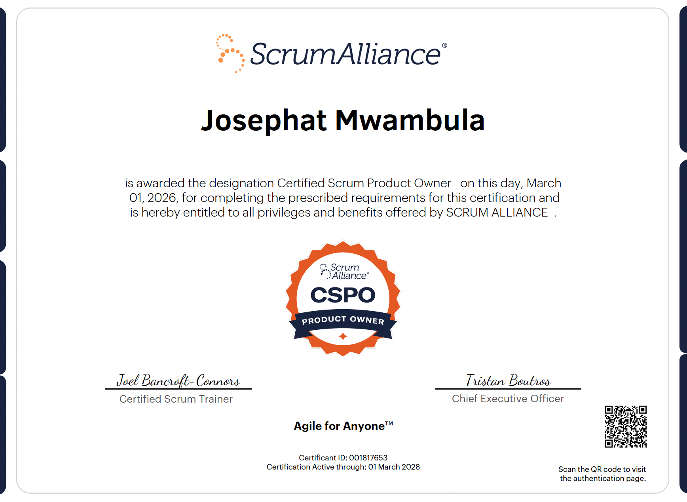
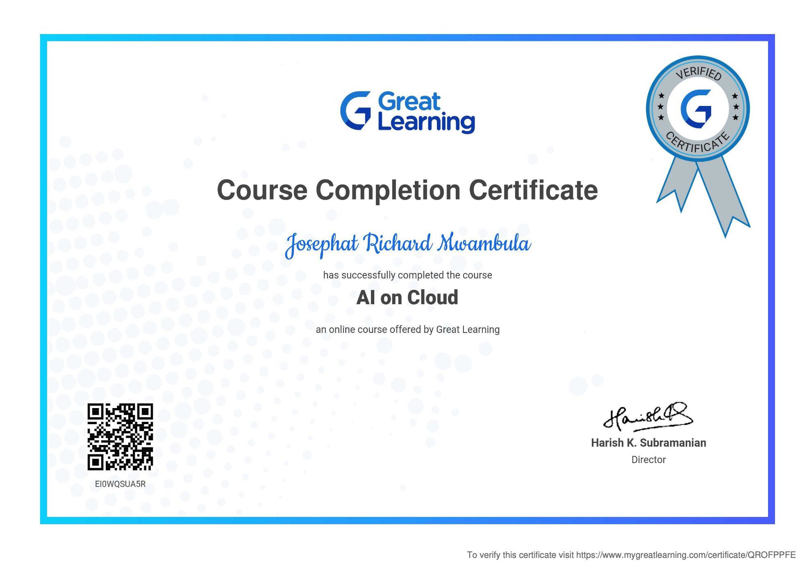
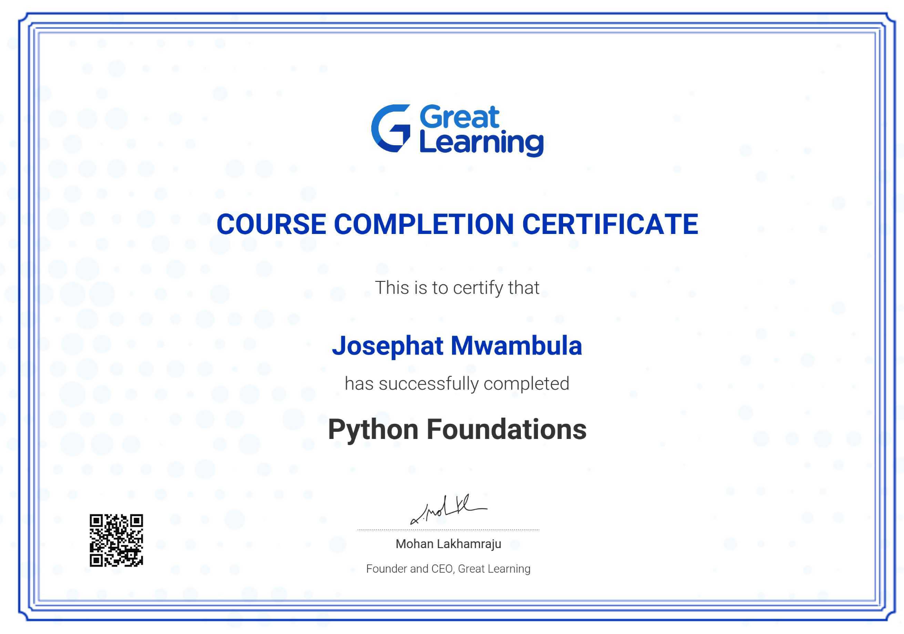
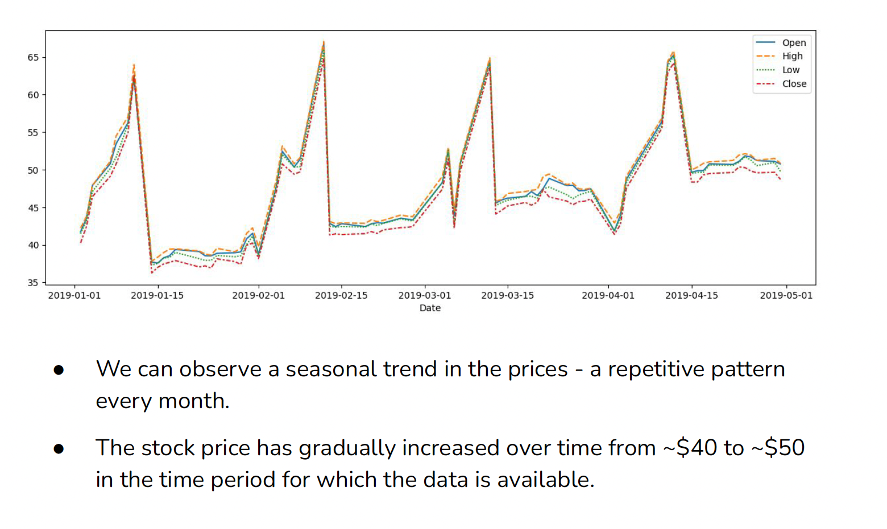
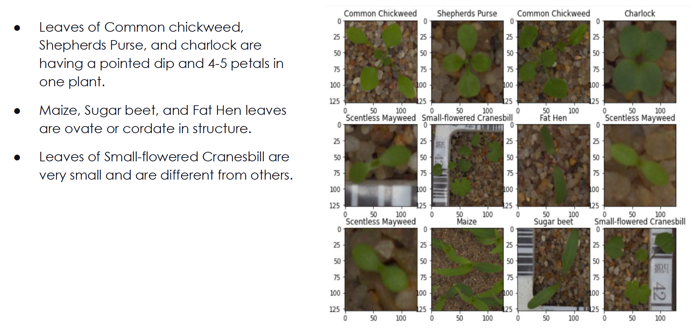
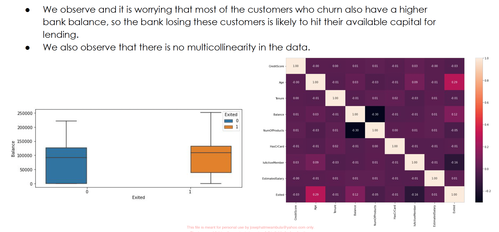
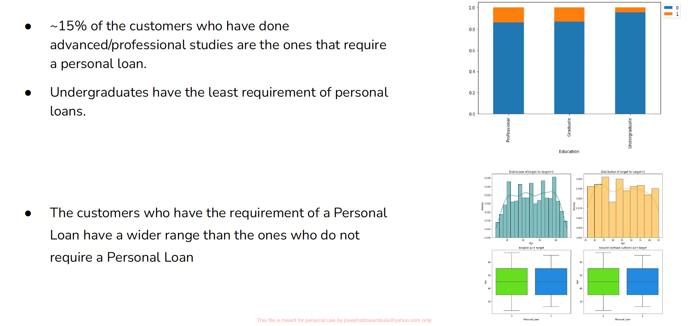
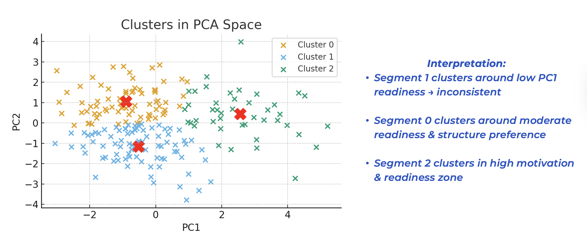
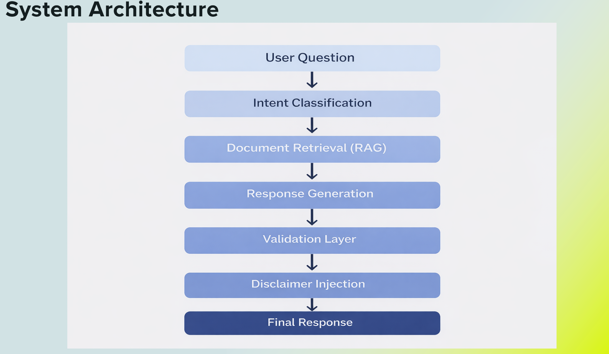

Master of Science in AI in Business Analytics from Simon Business School, University of Rochester & BI Capstone Analyst at Greenlight Networks. I specialize in bridging the gap between big data engineering and high-level product strategy.
Inefficiency Reduction via Data Mining
Optimization in Customer Retention
Image Classification Efficiency Gain

Scrum Alliance
Issued: Mar 2026

Texas McCombs School of Business
Issued: Jan 2025

Texas McCombs School of Business
Issued: Oct 2024

Engineered an AI driven NLP pipeline to process financial news, gauge market sentiment, and optimize stock investment strategies.

Developed a robust CNN image classifier trained on 10K+ images to fully automate weed and crop identification at scale.

Designed a neural network to analyze complex banking datasets, accurately identifying at-risk customers to drive retention strategies.

Deployed predictive classification models to score customer conversion propensity, significantly boosting marketing ROI.

Developed an end-to-end machine learning pipeline using XGBoost to predict program non-adoption and optimize community resource allocation.

Designed a biologically-inspired Genetic Algorithm to solve complex, multi-variable optimization problems and maximize resource efficiency.
Worked on AI-powered Power BI analytics, semantic model optimization, and Copilot workflow improvements for enterprise business reporting.
Analyzed multi source behavior datasets using SQL to identify engagement drivers, successfully improving user retention by 16% through data-driven interventions.
Conducted market research and advanced Excel analysis to support pricing and campaign optimization. Applied ETL concepts to large-scale data to optimize retention by 17%.